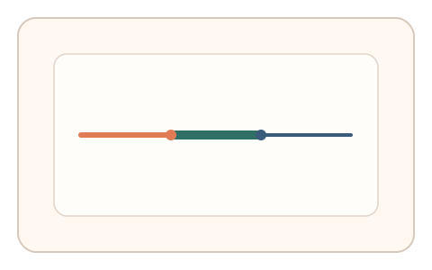
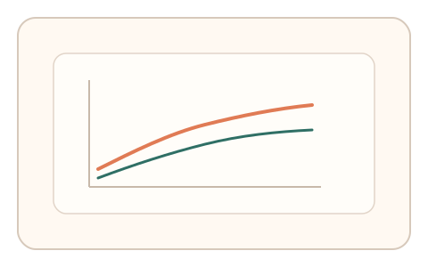

#3
生物肌肉与鼠标运动
已扩展
变阻尼追踪
通过动态变化的阻尼/惯性让用户持续纠偏，评估其适应曲线与反应时结构。
概念原文
光标在不同时间片呈现不同“阻尼/惯性”，用户需要动态修正才能保持在窄通道内。人类凭肌肉反馈快速调整，脚本若没有控制模型会出现过度平滑或过度抖动。
把验证从“看懂什么”变成“能否适应不可预测的动力学”。
研究背景
人类在运动控制中会根据外部动力学变化进行快速适应，形成可观测的适应曲线与纠偏模式。若在指针控制中引入随机阻尼或增益变化，人类可在短时内调整动作幅度，而脚本往往表现为过度平滑或机械化补偿。
核心机制
- 在追踪任务中动态改变阻尼/惯性或增益参数。
- 记录用户的过冲、回拉与适应时间。
- 提取“短期试错 → 稳定校准”的适应曲线形态。
- 采用多段随机参数，抬高预估与重放难度。
用户流程
- 步骤 1：用户进入窄通道追踪任务。
- 步骤 2：系统在不同时间片改变阻尼/惯性。
- 步骤 3：系统评估纠偏曲线与适应速度并判定。
判定信号
适应曲线斜率与稳定时间
人类会出现可测的试错‑校准过程。
过冲‑回拉比率与纠偏时延
真实操控存在非线性纠偏与滞后。
判定逻辑
以参数切换点为锚，计算适应时间窗、过冲比例与回拉速度；要求多段任务内具有一致的“人类适应曲线形态”。
对抗面
- 脚本提前读取参数并用控制器拟合
- 回放采集到的适应轨迹
防御与缓解
- 参数随机化并加入不可见微扰
- 多段切换与多信号耦合提升拟合成本
- 对“过度平滑”与“零延迟”进行异常检测
可达性与风险
提供低强度模式与更宽容通道，允许用户主动切换为更慢的适应节奏。
- 高频切换可能导致用户疲劳
- 低性能设备延迟可能扭曲适应曲线
可视化状态

状态 1：动态阻尼通道
窄通道中阻尼随时间变化。

状态 2：纠偏与过冲
用户在阻尼切换处出现过冲与回拉。

状态 3：适应曲线判定
对比多段适应曲线的一致性。
参考资料
Motor adaptation
说明人在动力学变化下的适应机制。
Motor learning
说明短期试错到稳定校准的学习过程。